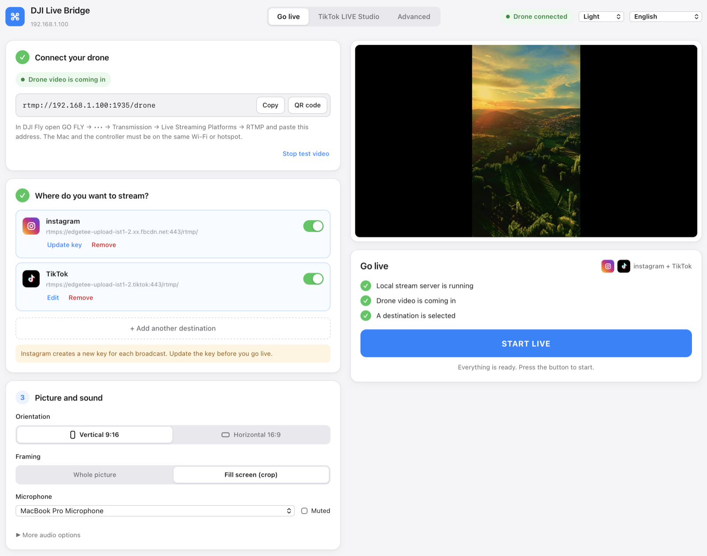
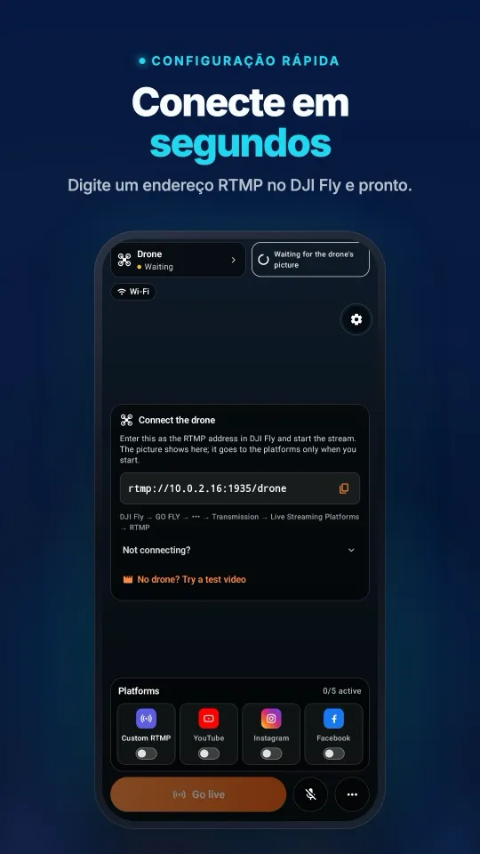
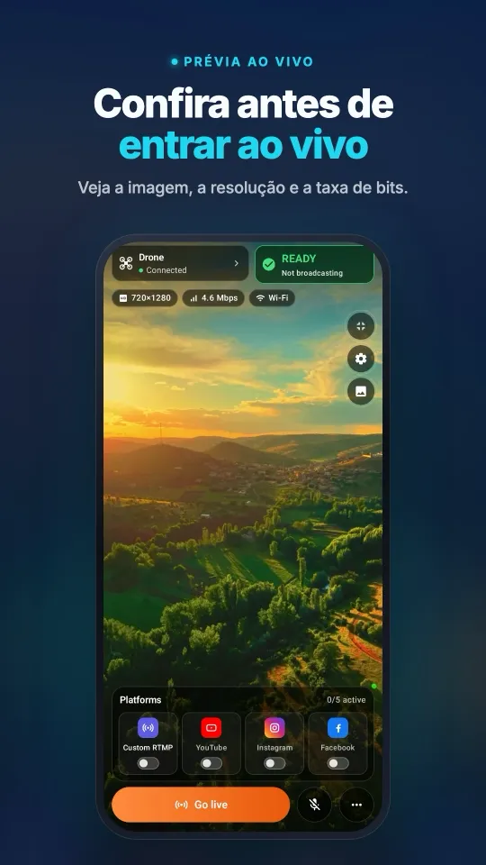
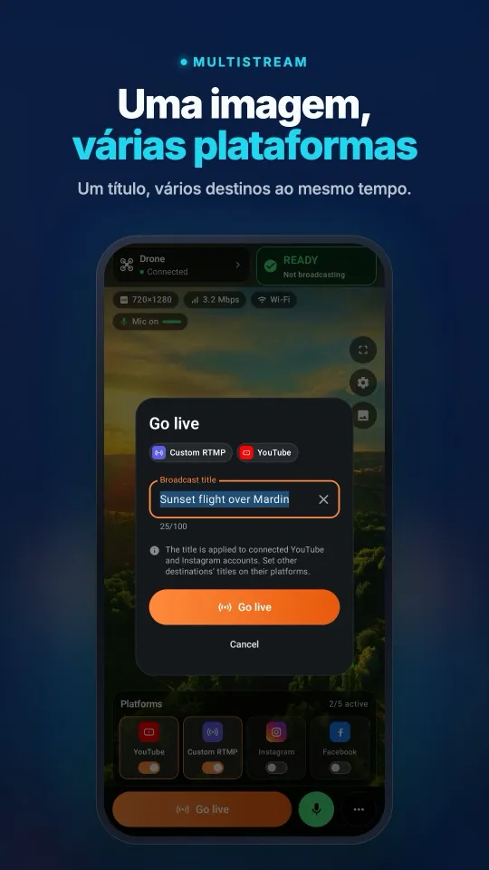
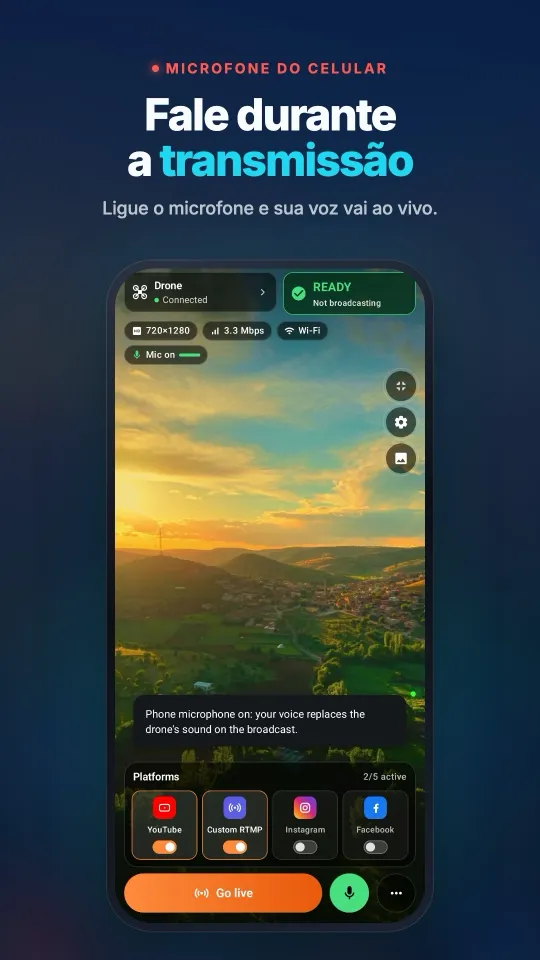
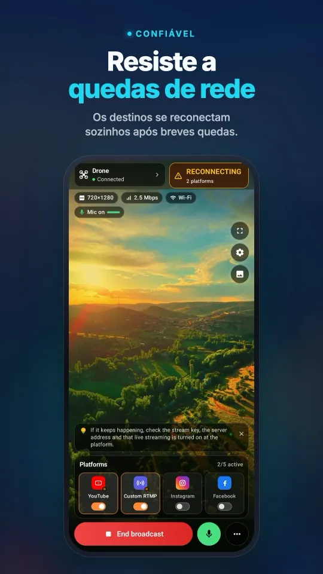

Como fazer uma transmissão ao vivo com o DJI Lito 1
O kit padrão do DJI Lito 1 vem com um RC-N3, então comece com o DJI Fly no celular preso ao controle e o Stream My Drone em um computador separado. Se você já usa um RC 2 compatível, um segundo celular com o Stream My Drone pode receber a imagem no lugar dele. Este guia mostra os dois caminhos, do endereço RTMP local até uma transmissão que o seu público consegue assistir.
O DJI Fly pede um microfone no seu RC 2 e não inicia a live? Resolva sem comprar microfone →
Em resumo
- A DJI inclui o Lito 1 no seu guia de compatibilidade de transmissão ao vivo; confira o controle e a versão atual do DJI Fly juntos.
- O RC 2 mantém o DJI Fly na própria tela, deixando um segundo celular livre para receber a transmissão.
- O RC-N3 e o RC-N2 usam um celular para o DJI Fly. Use o computador como receptor, como explicado abaixo, para que o DJI Fly continue aberto.
- O endereço do receptor local vai no DJI Fly. As contas das plataformas e as chaves de transmissão são configuradas no Stream My Drone, no celular ou no computador.
- Confira primeiro a prévia no receptor e depois a página de visualização da plataforma; as configurações de gravação não definem a saída RTMP.
Escolha o fluxo para o seu RC 2, RC-N3 ou RC-N2
O FAQ oficial do Lito 1 lista o DJI RC 2, o DJI RC-N3 e o DJI RC-N2. O guia de compatibilidade de transmissão ao vivo do DJI Fly também cita o Lito 1. Use o nome que está no seu controle para escolher o caminho abaixo; o mesmo nome de drone não torna todos os controles intercambiáveis.
| Controle | Onde você pilota | Onde você recebe a transmissão |
|---|---|---|
| DJI RC 2 | DJI Fly na tela integrada | Stream My Drone em um segundo celular ou Stream My Drone em um computador |
| DJI RC-N3 | DJI Fly no celular conectado por USB | Stream My Drone em um Mac ou PC com Windows separado |
| DJI RC-N2 | DJI Fly no celular conectado por USB | O mesmo fluxo com computador separado do RC-N3 |
O guia de transmissão ao vivo da DJI indica um limite de 720p para o RC 2 e, a partir do DJI Fly v1.16.0, um microfone conectado. Confira esses requisitos antes de sair para a transmissão. Instale o Stream My Drone no celular que vai receber a imagem; ele não roda no RC 2.
Lito 1 com RC-N3 ou RC-N2: receba a imagem em um computador
Com o RC-N3 ou o RC-N2, mantenha o DJI Fly aberto no celular preso ao controle. Instale o Stream My Drone em um Mac ou PC com Windows e coloque esse computador e o celular com o DJI Fly na mesma rede local. O RC 2 também pode usar esse caminho pelo computador.
- Encontre o endereço RTMP do computadorAbra o Stream My Drone e copie o endereço em Conecte seu drone. Um endereço como
rtmp://192.168.1.20:1935/droneé só um exemplo; use o que o seu app mostrar. - Envie o DJI Fly para esse endereçoNo DJI Fly, abra GO FLY → ••• → Transmission → Live Streaming Platforms → RTMP, digite o endereço do receptor e inicie a transmissão. O guia de RTMP do DJI Fly explica o menu. Se o firewall do computador perguntar, permita conexões de entrada na sua rede privada. Confira a prévia antes de adicionar um destino.
- Defina a saída e a plataformaEscolha horizontal para uma transmissão tradicional no YouTube ou no Facebook, ou saída vertical para uma conta com layout em retrato. Adicione a URL do servidor e a chave atuais do destino, inicie a saída e confira a transmissão na plataforma.

Veja no seu celularDa conexão com o DJI Fly à transmissão em várias plataformas, tudo em uma tela.




Lito 1 com RC 2: use um segundo celular, sem computador
- Instale o Stream My Drone no celularBaixe o app no Google Play ou na App Store. O celular recebe a transmissão enquanto o DJI Fly continua aberto no RC 2.
- Conecte o RC 2 e o celularColoque os dois na mesma rede Wi-Fi com acesso à internet. Em campo, um celular Android pode criar o ponto de acesso e também receber a transmissão. Abra o Stream My Drone depois de escolher a rede; no iPhone, permita o acesso à rede local quando for solicitado.
- Copie o endereço de recepção para o DJI FlyUse o endereço local completo que o Stream My Drone mostra. No DJI Fly, abra GO FLY → ••• → Transmission → Live Streaming Platforms → RTMP e digite o endereço ali. O passo a passo completo do menu está no guia de configuração RTMP do DJI Fly. Conecte um microfone se o DJI Fly pedir.
- Inicie a transmissão no DJI Fly e confira a préviaInicie a transmissão no controle e confirme que a imagem do drone em movimento aparece no celular. Mantenha o Stream My Drone aberto enquanto verifica a conexão. Isso estabelece o link de vídeo local.
- Escolha um destino e confirme a publicaçãoAdicione uma plataforma no Stream My Drone conectando a conta, quando disponível, ou com a URL do servidor e a chave de transmissão. Comece o envio e abra o painel ao vivo ou a página de visualização da plataforma. Conclua qualquer etapa de Go Live que a plataforma ainda exija.
O celular repassa o vídeo recebido sem recodificá-lo. O corte ou o fundo desfocado da prévia não transforma a saída em vertical 1080×1920. Use o app para computador quando precisar dessa conversão. No iPhone, mantenha o app em primeiro plano durante a configuração; para continuar transmitindo em segundo plano, é preciso o Picture in Picture.
Em qual plataforma você quer transmitir?
| Plataforma | O que preparar | Guia detalhado |
|---|---|---|
| YouTube | Uma conta com transmissão ao vivo ativada e uma transmissão preparada | Configuração do YouTube |
| Acesso ao Live Producer e credenciais RTMPS atuais | Configuração do Instagram | |
| Uma transmissão ao vivo com a URL do servidor e a chave | Configuração do Facebook | |
| TikTok | Acesso RTMP na sua conta ou um computador com acesso ao LIVE Studio | Configuração do TikTok |
O acesso à plataforma depende da sua conta. Receber a imagem do drone no app não gera uma chave de transmissão nem publica uma live. Para o TikTok LIVE Studio, o app para computador também oferece uma câmera virtual. Confira no painel de cada plataforma qual é a etapa de publicação atual.
Qualidade de gravação do Lito 1, imagem ao vivo e saída RTMP
A página do produto Lito 1 descreve gravação em 4K e transmissão de imagem O4. Essas especificações tratam de partes diferentes do fluxo. O vídeo gravado no drone, a imagem no controle, a entrada RTMP e a saída na plataforma podem ter resoluções diferentes. Confira a entrada informada pelo seu receptor; ampliá-la no computador não recupera detalhes que faltam.
- Teste antes de decolar. Verifique o movimento, o som e a página de visualização da plataforma com o drone ainda no chão.
- Calcule o upload. Uma saída contínua de 5 Mbps usa cerca de 2,25 GB por hora, sem contar a sobrecarga da rede. Dois destinos assim precisam de cerca de 10 Mbps de upload no total e 4,5 GB por hora.
- Mantenha o link local forte. Deixe o celular ou o computador perto do ponto de acesso. Uma conexão estável importa mais que a velocidade máxima anunciada da rede.
- Observe o enquadramento real da saída. No celular, o layout da prévia é só local. No computador, confira o corte escolhido ou a saída com a imagem inteira antes de publicar.
Como resolver problemas na live do Lito 1
- Sem menu RTMP: confira o modelo do controle, atualize o firmware e o DJI Fly e procure em Transmission. O app receptor não consegue adicionar um recurso que falta no DJI Fly.
- A conexão falha: copie de novo o endereço do app depois de trocar de rede. Use uma rede local compartilhada sem isolamento de convidados;
localhostno controle aponta para o próprio controle. - Imagem no celular, mas nada para o público: confira a conexão do destino, a chave de transmissão atual e a etapa final de publicação da plataforma. Enviar dados, por si só, não confirma uma transmissão pública.
- A transmissão para ao trocar de app no iPhone: volte ao Stream My Drone e confira o Picture in Picture. Sem ele, o iOS pode suspender o receptor.
- Live travando: comece com um único destino, confira a estabilidade do upload da rede móvel e aproxime o receptor do ponto de acesso.
Fontes e guias de modelos relacionados
Detalhes do modelo e dos controles: página oficial do produto Lito 1 e FAQ. Lista de drones: guia de compatibilidade de transmissão ao vivo do DJI Fly (em chinês). Requisitos dos controles e instruções do menu: DJI Fly App Livestream Operation Guides. Verificado em 25 de outubro de 2026; confira o menu atual de novo depois de atualizações de firmware.
Compare com o outro modelo Lito: configuração do Lito X1.
Para um drone da linha Mini, veja o guia do Mini 5 Pro. Para enviar uma mesma imagem para vários destinos, continue no guia de multistreaming.
Perguntas
Dá para fazer live com o Lito 1 sem computador?
Com o RC 2, use o Stream My Drone em um segundo celular conectado à mesma rede local. O DJI Fly roda no controle, o celular recebe a transmissão RTMP e você configura o destino no Stream My Drone.
Posso usar o celular que já está conectado ao RC-N3 ou ao RC-N2?
Esse celular roda o DJI Fly para pilotar. Este guia usa o Stream My Drone em um computador separado como receptor, para que o DJI Fly continue aberto. Ele não parte do princípio de que os dois apps conseguem cuidar do voo e da retransmissão ao vivo no mesmo celular.
Qual endereço vai no DJI Fly?
O endereço local de recepção completo que o Stream My Drone mostra, no celular ou no computador. A URL do servidor e a chave de transmissão da plataforma vão nas configurações de destino do app receptor.
O Stream My Drone transforma o vídeo em uma transmissão vertical?
O app para celular repassa o vídeo que recebe. O layout da prévia não recodifica a imagem de saída. O Stream My Drone no computador oferece a conversão da saída para vertical.
Por que eu vejo a prévia, mas o público não consegue assistir?
A prévia só prova que a imagem local do drone chegou. Inicie a saída para um destino, confirme que a plataforma está recebendo e conclua ali qualquer etapa de Go Live que ainda falte.
Posso usar o QuickTransfer para uma live com o Lito 1?
O QuickTransfer transfere arquivos gravados. Para a imagem do voo ao vivo, use o menu RTMP do DJI Fly e o endereço do receptor que o seu app mostra. Primeiro confira se o vídeo em movimento chega ao receptor e só então inicie a saída para a plataforma.
Transmita seu drone ao vivo pelo celular
O Stream My Drone para Android e iPhone recebe a imagem do DJI Fly e envia para YouTube, Instagram, Facebook, TikTok, Twitch, Kick ou seu próprio servidor, vários ao mesmo tempo. Compra única, sem assinatura.

Mais guias
DJI RC 2 não faz live sem microfone? Como resolver “No built-in mic in current device”
O DJI Fly 1.16 não inicia a live do RC 2 sem microfone. Por que acontece, o que funciona (microfone USB-C, AirPods) e uma solução sem hardware com um celular Android.
Como fazer uma transmissão ao vivo com o DJI Flip
Transmita ao vivo com o DJI Flip usando RC 2, RC-N3 ou RC-N2: RTMP no celular e no computador, diferença para o controle pela palma e pelo celular, enquadramento vertical.
Como fazer uma transmissão ao vivo com o DJI Lito X1
Faça live com o DJI Lito X1 usando RC 2, RC-N3 ou RC-N2: ajustes RTMP no DJI Fly, fluxos no celular e no computador, configuração das plataformas e soluções práticas.
Como fazer uma transmissão ao vivo com o DJI Air 3S
Faça transmissão ao vivo com o DJI Air 3S no YouTube, Instagram ou Facebook. Escolha o controle, envie o RTMP do DJI Fly ao celular ou computador e confira a imagem.
Como fazer uma transmissão ao vivo com o DJI Air 3
Como fazer live com o DJI Air 3 no YouTube, Instagram ou Facebook: escolha o controle, envie o RTMP do DJI Fly ao celular ou ao computador e confira a imagem de saída.
Como fazer uma transmissão ao vivo com o DJI Mavic 4 Pro
Transmita ao vivo com o DJI Mavic 4 Pro usando RC 2 ou RC Pro 2, pelo celular ou computador. Confira o RTMP do DJI Fly, o microfone, o limite de 720p e as plataformas.
Como fazer uma transmissão ao vivo com o DJI Mavic 3, Classic ou Pro
Faça transmissão ao vivo com o DJI Mavic 3, Classic ou Pro usando RC-N1 ou RC Pro. Saiba por que o DJI RC não transmite, além de celular, RTMP no computador e qualidade.
Como fazer uma transmissão ao vivo com o DJI Mini 3 Pro
Faça transmissão ao vivo com o DJI Mini 3 Pro usando RC-N1, o DJI Fly no celular e o Stream My Drone no computador. Entenda por que o DJI RC original não usa esse RTMP.
Como fazer uma transmissão ao vivo com o DJI Mini 3
Configure a live do DJI Mini 3 pelo RC-N1 e DJI Fly até o Stream My Drone no computador. Veja os limites do DJI RC, a imagem ao vivo em 720p e a publicação nas plataformas.
Como fazer transmissão ao vivo com o DJI Mini 5 Pro
Faça live com o DJI Mini 5 Pro usando RC 2 ou RC-N3. Configure o RTMP no DJI Fly, use celular ou computador e envie a imagem do drone para YouTube, Instagram ou Facebook.
Como fazer transmissão ao vivo com o DJI Mini 4 Pro
Faça transmissão ao vivo com o DJI Mini 4 Pro usando RC 2 ou RC-N2: configuração pelo celular e pelo computador, RTMP no DJI Fly, microfone obrigatório e checagem na plataforma.
Encontre e conte animais ao vivo com o seu drone DJI
O Stream My Drone encontra cabras, ovelhas, vacas, cavalos, burros e aves na imagem ao vivo do drone, marca cada animal na transmissão e faz a contagem no seu computador.
Transmissão ao vivo por RTMP no DJI Fly: a configuração completa
Como configurar a transmissão ao vivo por RTMP no DJI Fly: onde fica a opção, qual endereço digitar, como ligar o controle e o computador na mesma rede e como resolver problemas.
Por que o DJI Fly não transmite ao vivo no Instagram (e a solução)
O DJI Fly não tem opção para o Instagram e o cliente RTMP dele não faz o RTMPS criptografado que o Instagram exige. Veja o motivo e como fazer live no Instagram com drone DJI.
Transforme seu drone DJI na webcam do computador
Transforme seu drone DJI em webcam para TikTok LIVE Studio, OBS, Zoom, Google Meet ou Teams com a câmera virtual do Stream My Drone. Configuração, ideias e soluções.
Como fazer transmissão ao vivo com o DJI Neo
Como fazer transmissão ao vivo com o DJI Neo: qual modo de controle funciona (celular, RC-N3, óculos), o RTMP no DJI Fly e a live no Instagram, TikTok ou YouTube.
Como fazer transmissão ao vivo com o DJI Avata 2
Como fazer live com imagens FPV do DJI Avata 2: compartilhe a visão dos Goggles 3 com o DJI Fly no celular, transmita por RTMP e entre ao vivo no Instagram, TikTok ou YouTube.
Transmita ao vivo da sua câmera DJI Osmo para Instagram, TikTok e mais
O DJI Mimo transmite por RTMP das câmeras Osmo Action, Osmo Pocket e Osmo 360. Envie para o Stream My Drone e faça live no Instagram, TikTok e YouTube ao mesmo tempo.
Como fazer live com a Osmo Pocket 3 no Instagram e no TikTok
Como fazer transmissão ao vivo com a DJI Osmo Pocket 3 por RTMP no DJI Mimo para Instagram, TikTok e YouTube ao mesmo tempo, e usá-la como webcam sem fio com o Stream My Drone.
Como fazer live com uma câmera Osmo Action no Instagram e no TikTok
Faça transmissão ao vivo com a DJI Osmo Action 6, 5 Pro, 4 ou 3 por RTMP no DJI Mimo para Instagram, TikTok, YouTube e Twitch ao mesmo tempo com o Stream My Drone.
Como fazer live no TikTok com um drone DJI
Faça live no TikTok com seu drone DJI pelo DJI Fly: com chave de transmissão do TikTok, ou sem ela pelo TikTok LIVE Studio e uma câmera virtual. Configurações e soluções.
Como fazer live no Instagram com um drone DJI
Faça live no Instagram com seu drone DJI: pegue a URL e a chave de transmissão no instagram.com, envie o RTMP do DJI Fly pelo Stream My Drone e toque em “Iniciar live”.
Como fazer transmissão ao vivo de um drone DJI no YouTube
Transmita ao vivo do seu drone DJI no YouTube: ative a transmissão ao vivo, copie a chave no YouTube Studio e envie o RTMP do DJI Fly pelo Stream My Drone. Configurações e dicas.
Como fazer live no Facebook com um drone DJI
Faça transmissão ao vivo do seu drone DJI no Facebook: pegue a URL do servidor RTMPS e a chave no Live Producer, envie o DJI Fly pelo Stream My Drone e entre ao vivo.
Como transmitir um drone DJI na Twitch
Faça live do seu drone DJI na Twitch: copie a chave de transmissão no Painel do Criador, adicione a Twitch como destino RTMP personalizado no Stream My Drone e entre ao vivo.
Como transmitir um drone DJI na Kick
Faça live do seu drone DJI na Kick: copie a URL e a chave de transmissão no painel da Kick, adicione-as como destino RTMP personalizado no Stream My Drone e entre ao vivo.
Transmita um drone DJI em várias plataformas ao mesmo tempo
Envie a live de um drone DJI para TikTok, Instagram, YouTube, Facebook, Twitch e Kick ao mesmo tempo com o Stream My Drone — grátis, local, sem serviço de retransmissão.
Stream My Drone vs Restream: qual escolher para o seu drone?
Live de drone DJI em várias plataformas: retransmissão na nuvem do Restream ou Stream My Drone no seu computador? Custo, marca d’água, Instagram, vídeo vertical e quando cada um vence.
Transmita um drone DJI sem configurar NGINX e OBS
O jeito comum de levar o DJI Fly ao OBS é um servidor RTMP NGINX, um arquivo de configuração e uma fonte de mídia. Veja o que isso envolve e como pular tudo com um só app.